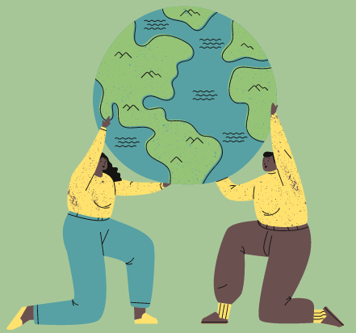

Throughout this website, you will be able to gain an understanding of what environmentalism is, ways to be a friend to the Earth, and connect with resources. In a world where chaos seems to follow us to every corner, thinking ecologically can be hard, so I've tried to make it easier. With collective action, we can begin to heal our Earth and create a better planet for generations to come, but it all starts with you. Join me on my green living journey and remember; you don't need to be perfect to make a difference.